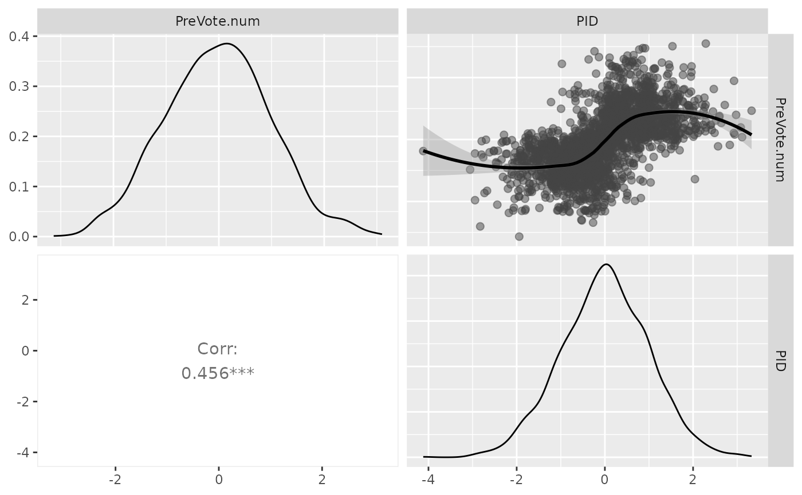

A plot matrix to display the results of partial association analyses. Upper-triangle contains scatter-plot matrix between each pair of response variables. Lower-triangle contains the partial correlation coefficients adjusted by covariates.
# S3 method for PAsso plot(x, color = "#444444", ...)
| x | the object in "PAsso" class that is generated by "PAsso" or "test". |
|---|---|
| color | The color of points. |
| ... | Additional optional arguments to be passed onto. |
A "GGally" object.
A pairwise plot matrix reveals the partial association between ordinal variables.
All the plots are based on surrogate residuals generated from "resides" function.
Graphics are designed based on ggplot2 and "GGally".
#> age edu.year education income.num #> Min. :18.00 Min. : 8.00 BAdeg :579 Min. : 5.0 #> 1st Qu.:37.00 1st Qu.:14.00 CCdeg :327 1st Qu.: 37.5 #> Median :53.00 Median :15.00 Coll :447 Median : 67.5 #> Mean :51.25 Mean :15.52 HS :307 Mean : 81.9 #> 3rd Qu.:65.00 3rd Qu.:17.00 HSdrop: 70 3rd Qu.:105.0 #> Max. :90.00 Max. :19.00 MAdeg :440 Max. :250.0 #> MS : 18 #> income PID selfLR #> (21) 21. $80,000-$89,999 : 138 Min. :1.000 Min. :1.000 #> (24) 24. $110,000-$124,999: 123 1st Qu.:2.000 1st Qu.:3.000 #> (17) 17. $60,000-$64,999 : 116 Median :4.000 Median :4.000 #> (15) 15. $50,000-$54,999 : 114 Mean :3.947 Mean :4.158 #> (27) 27. $175,000-$249,999: 112 3rd Qu.:6.000 3rd Qu.:6.000 #> (23) 23. $100,000-$109,999: 111 Max. :7.000 Max. :7.000 #> (Other) :1474 #> TrumpLR ClinLR PreVote PreVote.num #> Min. :1.000 Min. :1.000 DonaldTrump :1065 Min. :0.0000 #> 1st Qu.:5.000 1st Qu.:1.000 HillaryClinton:1123 1st Qu.:0.0000 #> Median :6.000 Median :2.000 Median :0.0000 #> Mean :5.261 Mean :2.415 Mean :0.4867 #> 3rd Qu.:6.000 3rd Qu.:3.000 3rd Qu.:1.0000 #> Max. :7.000 Max. :7.000 Max. :1.0000 #> #> WeightforPreVote #> Min. :0.1100 #> 1st Qu.:0.5759 #> Median :0.8071 #> Mean :0.9482 #> 3rd Qu.:1.1347 #> Max. :6.8139 #>PAsso_2v <- PAsso(responses = c("PreVote.num", "PID"), adjustments = c("income.num", "age", "edu.year"), data = ANES2016) plot(PAsso_2v)